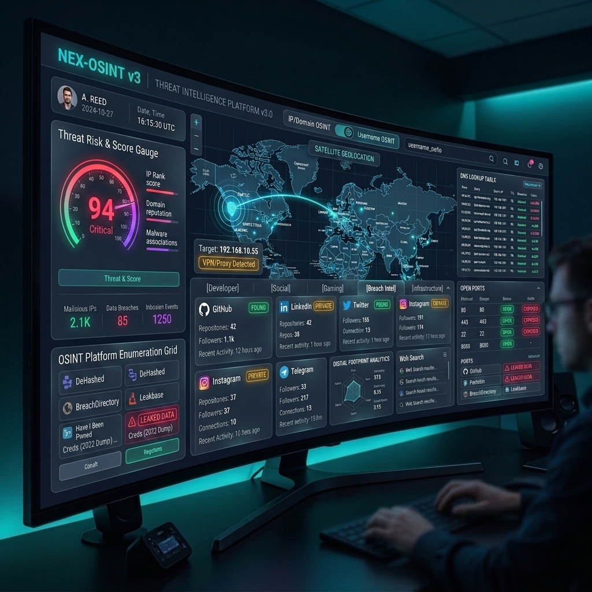
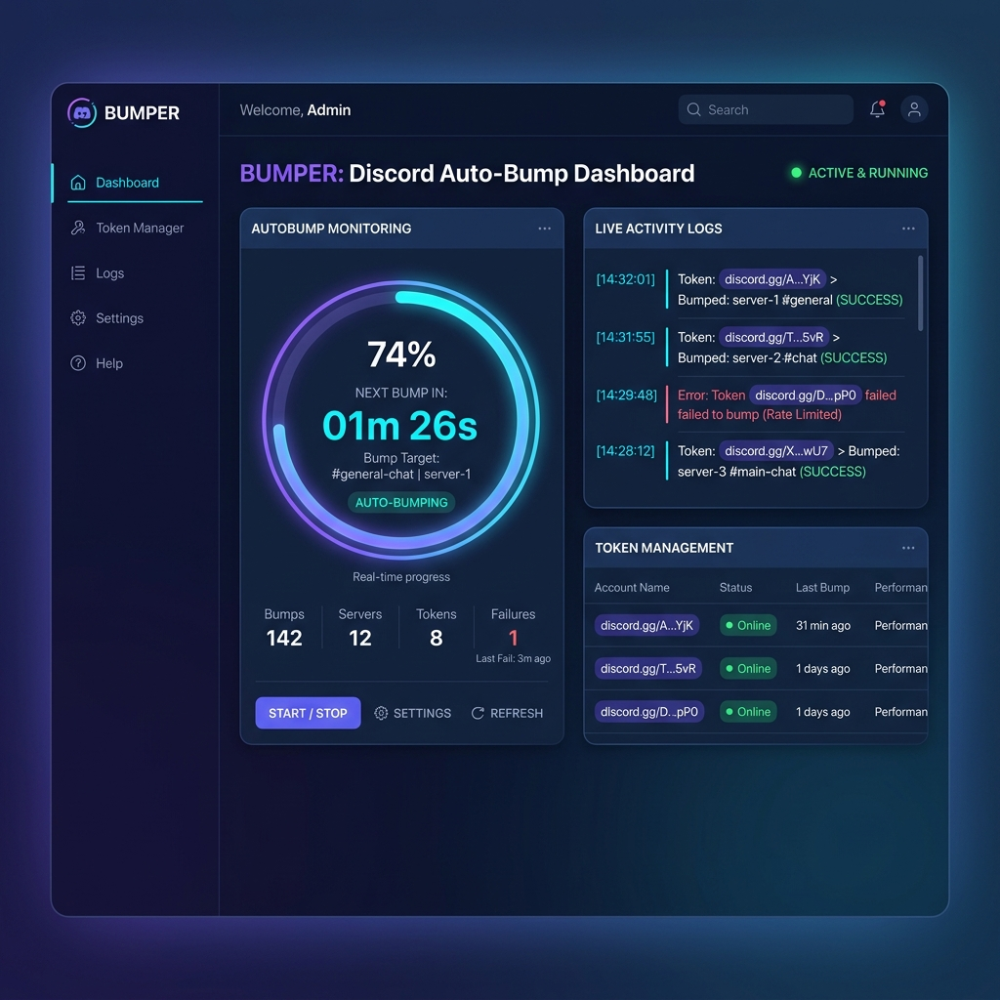
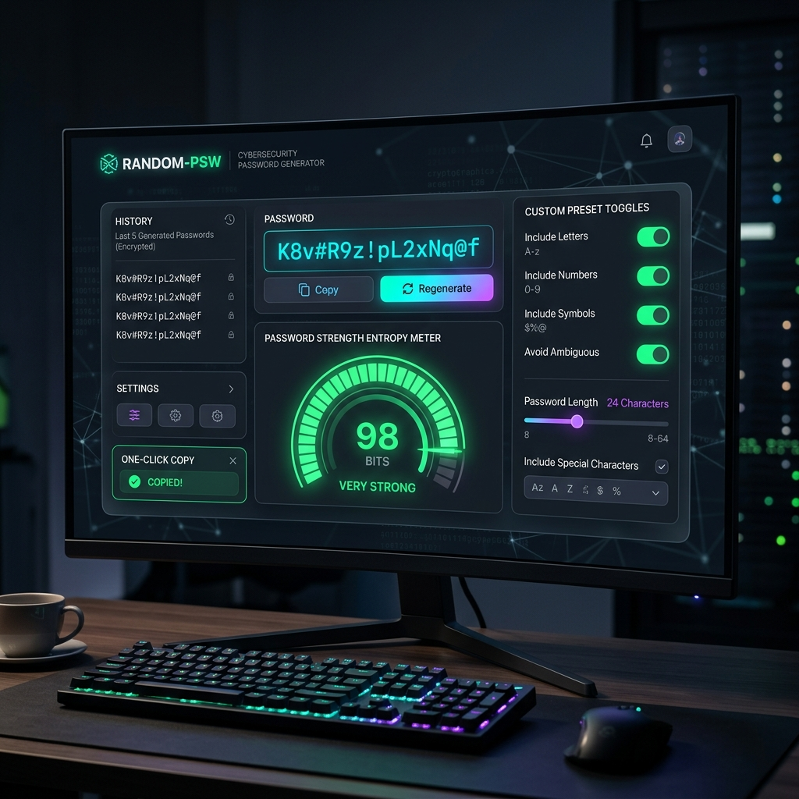
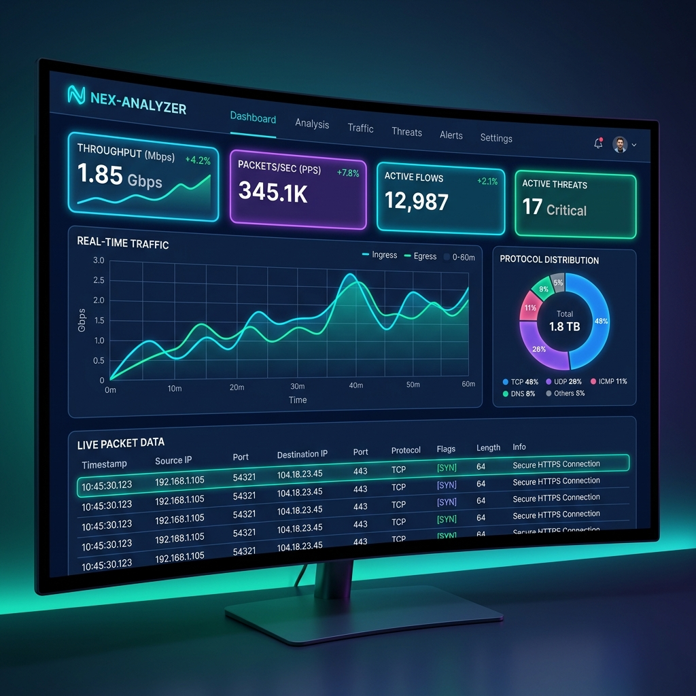
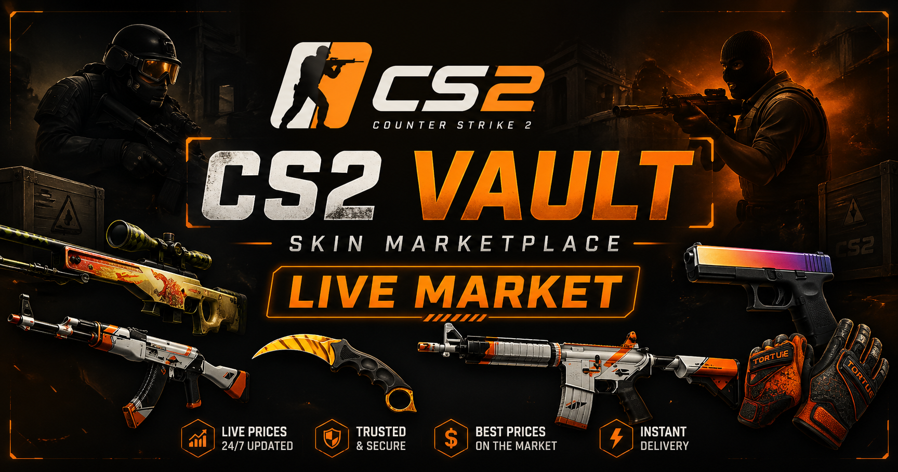
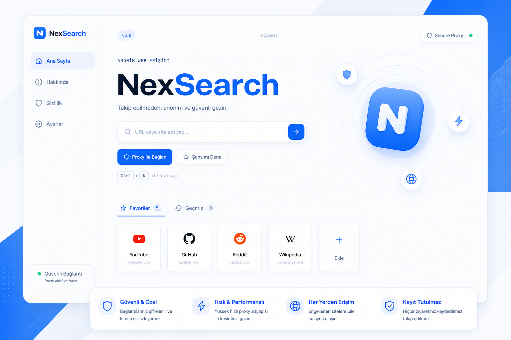
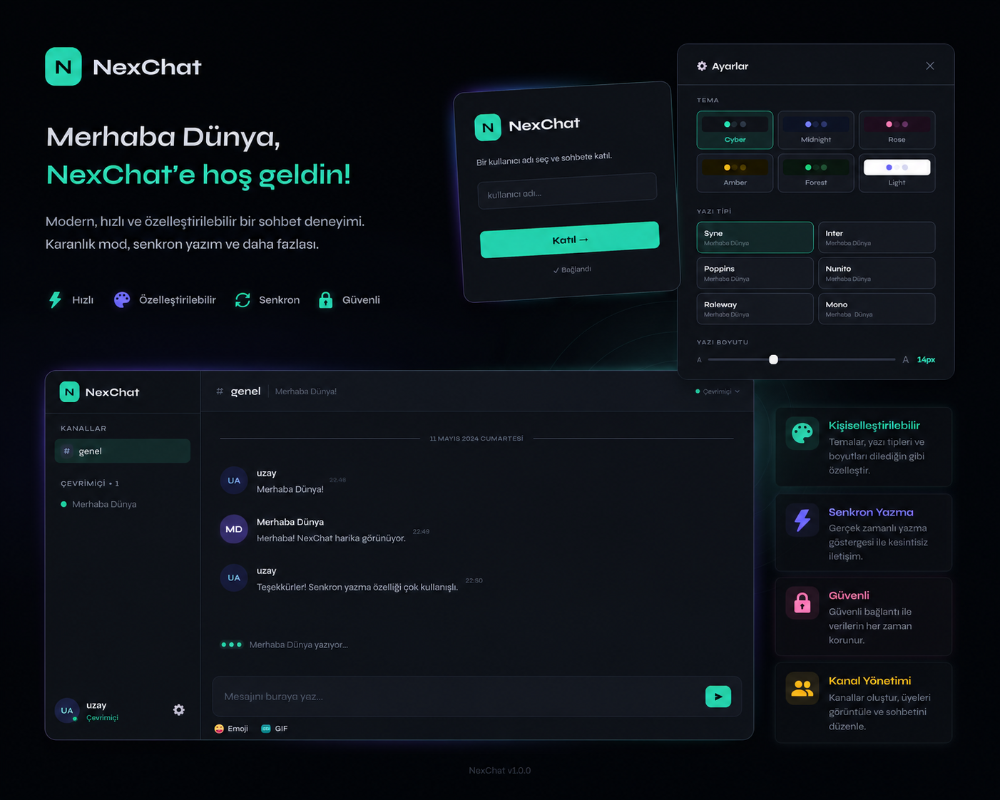

Çalışmalarım
Projeler
Geliştirdiğim siber güvenlik, ağ analizi, otomasyon ve web odaklı projelerim.

NEX-OSINT v3 – Siber Güvenlik & Tehdit İstihbarat Platformu
IP Geolocation, Tehdit Risk Skoru Göstergesi, DNS Kayıt Çözümleme (A, MX, TXT, NS), Açık Port Taraması ve 30+ Platformlu Kullanıcı Adı / Dijital Ayak İzi (Username OSINT) araştırması sunan All-in-One siber güvenlik platformu.

BUMPER – Discord Otomatik Sunucu Öne Çıkarıcı
Discord sunucularını ve kanallarını dairesel geri sayım sayacı, canlı aktivite günlükleri ve maskeli token yönetim paneli ile otomatik olarak öne çıkaran (/bump) otomasyon ve topluluk yönetim platformu.

RANDOM-PSW – Kriptografik Şifre Üretici & Güvenlik Kasası
Python secrets altyapısı ile kriptografik olarak kırılması imkânsız şifreler üreten, Bit Entropisi (log2(pool^L)) ve tahmini kırılma süresi ölçen, özelleştirilebilir slider/toggle seçenekli web platformu.

NEX-ANALYZER – Canlı Ağ Trafiği & Tehdit Detektörü
NEX-ANALYZER, canlı ağ paketlerini yakalayan, TCP/UDP/DNS/HTTP/ICMP protokol çözümlemesi yapan ve SYN Flood ile şüpheli port anormalliklerini tespit eden modüler bir Python ve Web GUI platformudur.

CS2 Skin Marketplace (Full Stack Project)
Steam Market’ten CS2 skinlerini çekip listeleyen full-stack bir web uygulaması. Node.js & Express ile veri çekme, filtreleme ve in-memory cache sistemi kurulmuştur.

NexSearch – Modern Web Proxy Platformu
Kullanıcıların tarayıcı üzerinden URL girerek web sitelerine proxy aracılığıyla erişmesini sağlayan full-stack web uygulaması.

NexChat – Gerçek Zamanlı Sohbet Uygulaması
WebSocket tabanlı gerçek zamanlı mesajlaşma deneyimi sunan sohbet odaları ve anlık mesajlaşma platformu.